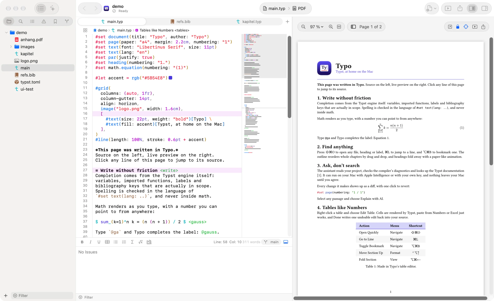
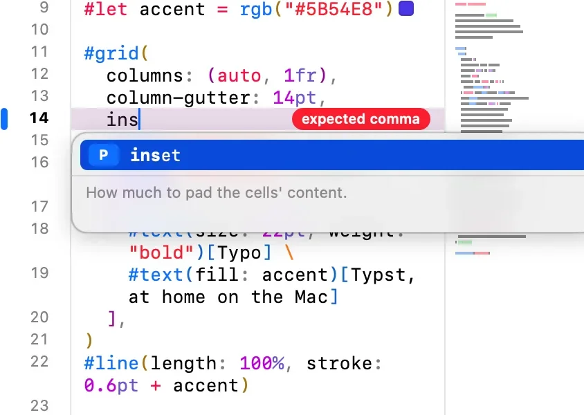
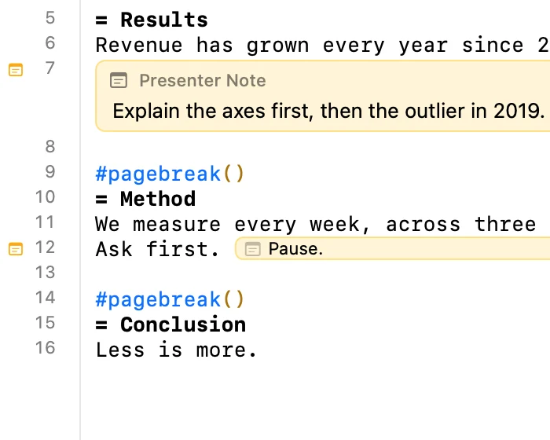
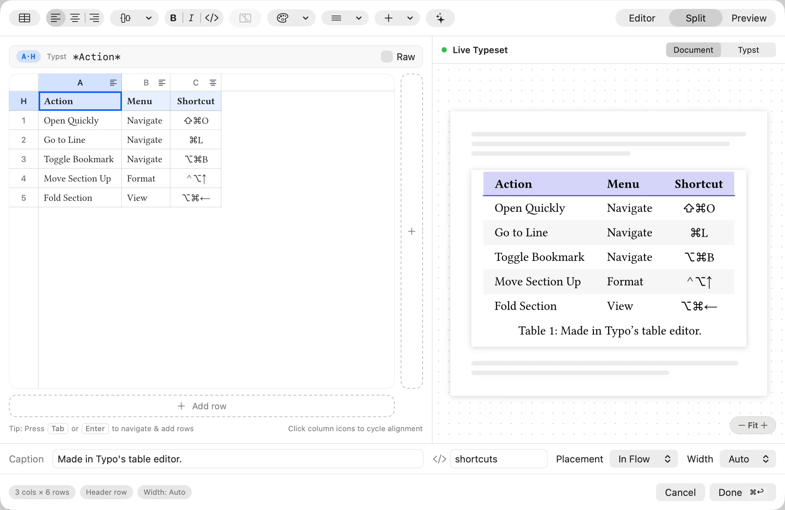
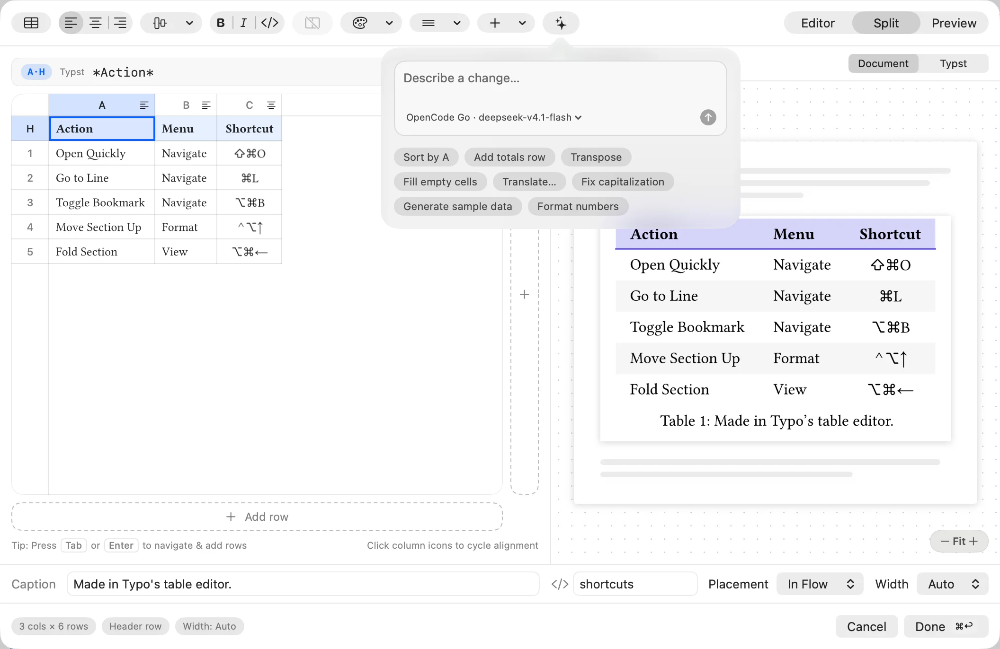
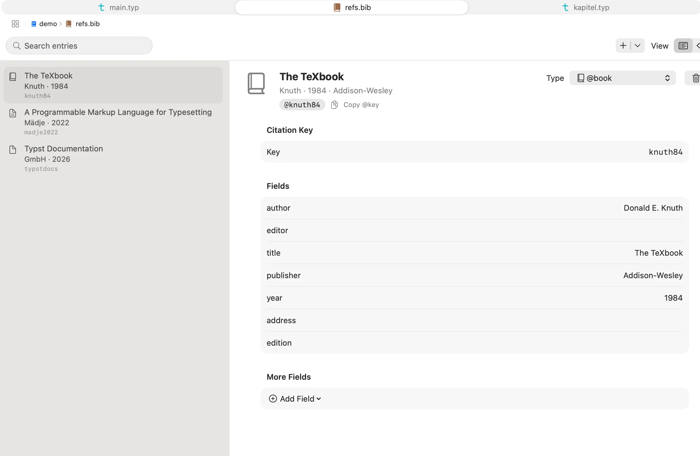

Typo for macOS
Typst, at home
on the Mac.
A native Typst editor written in Swift and SwiftUI, running the real Typst compiler. Lightweight and native, no Electron: a 40 MB download for papers, theses and slides, in an app that feels like it shipped with your Mac.

The editor
Everything you expect from a real IDE. For your prose.
-
Completion that knows your document
Scope-aware suggestions straight from the Typst engine: variables, functions from imports, built-ins, and only the labels and bib keys you can actually reach.

-
Live preview, click to source
Click anywhere in the preview to jump to the line that made it. Zoom, two-page spreads, page thumbnails and dark pages included.
-
Spell check that reads
langChecks in the language from
#set text(lang:), and leaves your math alone. -
Multi-cursor and Vim mode
Edit many places at once, or keep your muscle memory with a Vim mode and an Xcode-style mode capsule.
-
Colours you can see
Swatches sit right next to
rgb(…). Click one for a colour picker with sliders and value fields for every channel, and an optional wheel. -
Export for print and for everyone
PDF, archival PDF/A, accessible PDF/UA-1, PNG and SVG, with the pages chosen like in the print dialog. Print from File › Print… or take the whole project as a ZIP. Present full screen with a presenter view. A missing font gets a warning and a quick fix.
-
Presenter notes, like Keynote
Add a note to any slide from the context menu or a shortcut and write it in a small editor right in the source. The notes of the visible slide sit under the preview, Touying and Polylux notes included, and one click drafts them with AI. Present on a second display or an iPad with a presenter view like Keynote’s.

-
Find anything
Open Quickly (⇧⌘O) finds files, headings and labels. Go to Line with ⌘L. Find and replace across the whole project, with regular expressions.
-
Code intelligence for Typst
Jump to definition, find references, rename a symbol, hover for docs, signature help and quick fixes.
-
Your workspace, your way
Split editor, focus mode, minimap and sticky headings. Navigators for outline, issues, bookmarks and changes.
-
Projects with history
Start from a templates gallery. Snapshots and per-file history, plus a Git gutter with blame, a log and a Changes navigator.
-
Images that just drop in
Drag or paste an image and it becomes a figure.
-
Updates come to you
Typo checks for new versions and shows what changed. Install with one click, or skip a version.
Also on board: rainbow brackets, inlay hints, snippets, typstyle formatting, and a word count that counts only your words.
Table editor
Tables, the way Numbers does them.
Open any table(…) or grid(…) in a visual grid. Every cell is typeset by Typst itself, with your math, your references and your #set rules.

- Arrow keys, Tab, Return, copy and paste like a spreadsheet
- Paste straight from Numbers or Excel, the table grows to fit
- Merge cells, drag rows and columns, resize widths
- Styles: Plain, Grid, Header Line, Booktabs, Striped
- One undoable edit when you press Done
Table Intelligence
Sort, total, transpose. Just ask.
Describe a change in your own words or tap a suggestion: sort, add a totals row, transpose, fill empty cells, translate, fix capitalisation, format numbers. The result lands as a single undo step with a summary.

Want it dark?
No problem.
Folding
Fold anything. Watch it fold.
Collapse headings, figures, tables, math, code blocks, comments and lists. The animation follows Xcode’s approach: a paper-fold snapshot while the text below reflows every frame, at up to 120 Hz. Move sections up and down, or drag them in the outline, even into another file.
Try it: click the ribbon next to the line numbers.
Assistant, optional
An assistant that asks first.
Run it on-device with Apple Intelligence, or bring your own key for OpenRouter, OpenCode and other OpenAI- or Anthropic-compatible providers.
Type / for workflows. /check compiles and looks at every page, /submit is a checklist before you hand in, /consistency settles on one spelling for every term. Write your own. They work with any model.
- Nothing is sent until you agree to a provider
- API keys live only in your Keychain
- You decide what it may do: edit files, read the project, view the preview
- Changes apply right away, with an inline diff and a revert bar

Bibliography and packages
Citations without the curly braces.
Edit .bib files in a real form, with required-field checks. Insert a citation with ⇧⌘C. Browse Typst Universe, keep local packages, and work offline with a cached package index.
Add Reference looks up a DOI, arXiv ID or ISBN. Zotero sync fills a .bib from your Zotero library and keeps it in sync.

Make it yours
Settings that feel like Xcode. Because they should.
Themes, fonts, cursor styles and light or dark. Shortcut sets you can duplicate and rename, conflict filters, and record a new binding with a double-click. Export your settings and take them along.

Write something beautiful.
Typo is free, and its source is open to read. Grab it, look inside, tell us what your workflow is missing.